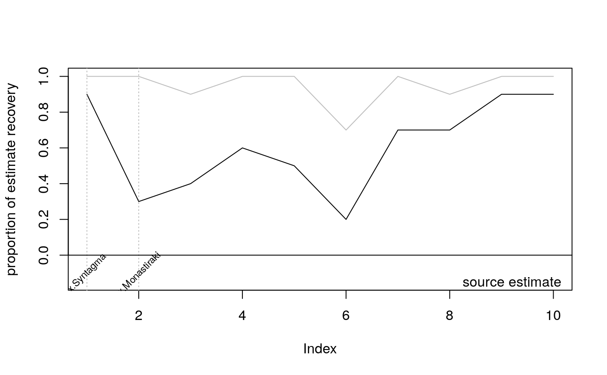

robustness.Rdrun robustness analysis for a source estimate by subsampling individual events.
robustness(x, type = c("edm", "backtracking", "centrality"), prop, n = 100, ...)
| x |
|
|---|---|
| type | character, specifying the method, |
| prop | numeric, value between zero and one, proportion of events to be sampled |
| n | numeric, number of resamplings |
| ... | parameters to be passed to origin methods |
data.frame with columns
est origin estimated when all data is evaluated
rob estimate uncertainty, computed as the proportion of resamplings when origin estimate was recovered
We create subsamples of individual events and their magnitude using a sampling proportion p in [0, 1]. After aggregating the data, we apply the source estimation approach. Using this result, we deduce the relative frequency of how often the source estimate obtained with the complete data set can be recovered by source estimation based on the subsample. Thus, the estimate robustness is assessed by the proportion of estimate recovery.
# generate random delay data data(ptnAth) require(igraph) dat <- data.frame(node = sample(size = 500, make.names(V(ptnAth)$name), replace = TRUE), time = sample(size = 500, 1:10, replace = TRUE), delay = rexp(500, rate=10)) # compute effective distance net <- igraph::as_adjacency_matrix(ptnAth, sparse=FALSE) p <- net/rowSums(net) eff <- eff_dist(p)#> Computing the effective distance between 51 nodes: #> 1...................................................donecolnames(eff) <- paste('x.',colnames(eff),sep='') # run robustness analysis r5 <- robustness(x=dat, type='edm', prop=0.5, n=10, distance=eff)#> Run robustness analysis for source estimate: #> ..........summary(r5)#> time estimate robustness #> 1 :1 x.Monastiraki:7 Min. :0.200 #> 10 :1 x.Syntagma :3 1st Qu.:0.425 #> 2 :1 Median :0.650 #> 3 :1 Mean :0.610 #> 4 :1 3rd Qu.:0.850 #> 5 :1 Max. :0.900 #> (Other):4plot(r5)# compare results r9 <- robustness(x=dat, type='edm', prop=0.9, n=10, distance=eff)#> Run robustness analysis for source estimate: #> ..........